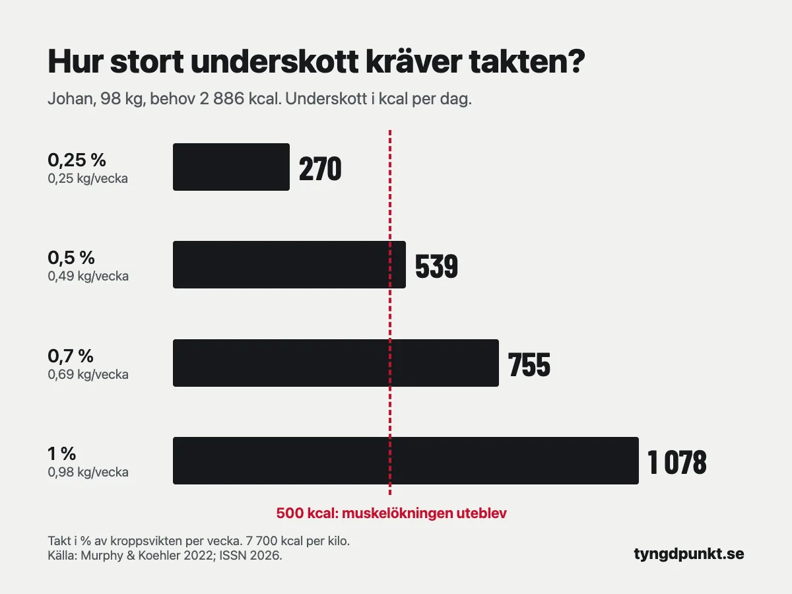

Hur deffar man utan att tappa muskler?
Du deffar utan att tappa muskler genom att gå ner lugnt, äta mycket protein och fortsätta styrketräna. Sikta på 0,5–1 procent av kroppsvikten i veckan och ett underskott på högst runt 500 kcal om dagen. Ät ungefär 2,2 gram protein per kilo eller mer och träna lika tungt som innan. Den lugnare delen av spannet skonar musklerna bäst.
Kalkylatorn visar uträkningen steg för steg.
Till kalkylatornTappar man muskler när man deffar?
Det kan man göra, men det går att begränsa mycket. När du äter mindre än du gör av med tar kroppen energin från fettet, men också en del från musklerna. Hur stor den delen blir beror främst på tre saker: hur snabbt du går ner, hur mycket protein du äter och om du styrketränar.
Helms och kollegor gick 2014 igenom sex studier på styrketränande personer med låg fettprocent som deffade. Fettprocenten sjönk i alla grupperna. Den fettfria massan, alltså allt utom fett, minskade med 0,3–2,7 kg i nio av tretton grupper. I de grupper som klarade sig utan förlust hade de flesta en högre fettprocent från början, ett mindre underskott eller ett nytt träningsprogram. Den enda gruppen som var smal, hade ett stort underskott och ändå behöll musklerna åt mest protein av alla, 2,5–2,6 gram per kilo.
Har du mer fett att gå ner är det alltså lättare att behålla musklerna. Ju smalare du blir, desto mer spelar takten och proteinet roll.
Det internationella idrottsnutritionssällskapet ISSN sammanfattade forskningen om viktnedgång 2026. Deras slutsats är att styrketräning och tillräckligt med protein är det som skyddar musklerna i en deff, oavsett vilken kost man väljer.
Hur snabbt kan man deffa utan att tappa muskler?
ISSN anger 0,5–1 procent av kroppsvikten i veckan för idrottare. En procentsats fungerar för alla vikter: den som väger mer kan gå ner fler kilo i veckan med samma påfrestning.
| Kroppsvikt | 0,5 % i veckan | Underskott per dag | 1 % i veckan | Underskott per dag |
|---|---|---|---|---|
| 60 kg | 0,3 kg | 330 kcal | 0,6 kg | 660 kcal |
| 70 kg | 0,35 kg | 385 kcal | 0,7 kg | 770 kcal |
| 80 kg | 0,4 kg | 440 kcal | 0,8 kg | 880 kcal |
| 90 kg | 0,45 kg | 495 kcal | 0,9 kg | 990 kcal |
| 100 kg | 0,5 kg | 550 kcal | 1,0 kg | 1 100 kcal |
Underskottet är räknat med 7 700 kcal per kilo, samma tal som kalkylatorn använder: kilo i veckan × 7 700 ÷ 7.
Två studier talar för att hålla sig i den lugnare delen. Garthe och kollegor lät 24 idrottare som styrketränade fyra gånger i veckan gå ner i vikt i två olika takter: 0,7 procent eller 1,4 procent av kroppsvikten i veckan. Båda grupperna gick ner ungefär lika mycket, men den långsamma gruppen åt 19 procent mindre än sitt behov och den snabba 30 procent mindre. Den långsamma gruppen ökade sin fettfria massa med 2,1 procent. I den snabba gruppen var den oförändrad. Priset för den lugnare takten var tiden: 8,5 veckor i stället för 5,3.
Murphy och Koehler slog 2022 ihop studier där deltagarna styrketränade i minst tre veckor med ett underskott. Muskelmassan ökade mindre med underskott än utan, och vid ett underskott på ungefär 500 kcal om dagen uteblev ökningen helt. Deras råd till den som vill behålla musklerna under en viktnedgång är att inte ha ett större underskott än 500 kcal om dagen.
För den som väger 90 kg eller mindre ligger 0,5 procent i veckan under den gränsen. Väger du mer kan 0,5 procent ge ett något större underskott, men du har sannolikt också mer fett att ta av.
Hur många kalorier ska man äta när man deffar?
Börja med ditt kaloribehov och dra av underskottet för den takt du valt. Räkna ut ditt kaloribehov i kalkylatorn. Den använder Mifflin–St Jeor och en faktor för hur många pass du tränar i veckan.
Räkneexempel. Johan är 41 år, 183 cm lång, väger 98 kg och styrketränar fyra pass i veckan. Han vill ner till 88 kg och behålla musklerna.
- Vilan: 10 × 98 + 6,25 × 183 − 5 × 41 + 5 ≈ 1 924 kcal.
- Med fyra pass i veckan: 1 924 × 1,5 ≈ 2 886 kcal om dagen.
- Takt 0,5 procent: 98 × 0,005 = 0,49 kg i veckan.
- Underskott: 0,49 × 7 700 ÷ 7 ≈ 539 kcal om dagen.
- Att äta: 2 886 − 539 ≈ 2 350 kcal om dagen.
Johan hamnar strax över 500 kcal, vilket är rimligt för hans vikt. Väljer han 0,25 procent i veckan, ungefär 0,25 kg, blir underskottet bara 270 kcal, men deffen tar dubbelt så lång tid. Med 0,7 procent i veckan (0,69 kg), som i Garthes studie, skulle underskottet bli 755 kcal. Med 1 procent (0,98 kg) blir det 1 078 kcal, alltså dubbelt så mycket som gränsen i Murphys analys.

I takt med att Johan går ner sjunker hans behov, så han behöver räkna om några gånger under deffen. Hur det går till, och vad du gör när vikten står still, står i varför står vikten still trots kaloriunderskott. Vill du se hur ett större underskott slår, finns uträkningen i gå ner 1 kg i veckan.
Hur mycket protein behöver man när man deffar?
Mer än när du ligger kvar på samma vikt. ISSN skriver att 1,6–2,2 gram per kilo och dag räcker för att bygga muskler, men att den som är smal, styrketränar och äter mindre än sitt behov kan behöva 1,9–3,2 gram per kilo för att behålla så mycket muskler som möjligt. Helms översikt landade i 2,3–3,1 gram per kilo fettfri massa, och ju större underskott och lägre fettprocent, desto högre.
Longland och kollegor testade det i en studie på 40 unga män. Under fyra veckor åt de ungefär 40 procent mindre än sitt behov och tränade styrka och intervaller sex dagar i veckan. Hälften åt 1,2 gram protein per kilo och hälften 2,4 gram. Gruppen med mer protein ökade sin fettfria massa med 1,2 kg, mot 0,1 kg i den andra gruppen, och gick dessutom ner 4,8 kg fett mot 3,5 kg.
Kalkylatorn räknar med 2,2 gram per kilo när målet är att gå ner i fett, och på målvikten om du har en. För Johan blir det 2,2 × 88 ≈ 194 gram om dagen. Vi valde målvikten för att mängden annars blir svår att äta varje dag för den som väger mycket. Är du redan smal och vill ligga högre i ISSN:s spann går det bra.
ISSN föreslår också att fördela proteinet på minst tre proteinrika måltider om dagen under en längre deff. Hur du räknar ut ditt behov och vad det blir i mat står i hur mycket protein per dag.
Hur ska man träna när man deffar?
Fortsätt styrketräna, och fortsätt med de tunga vikterna. Det är träningen som säger åt kroppen att musklerna behövs. Utan den har kroppen ingen anledning att spara dem när du äter mindre än du gör av med.
Att styrkan går att behålla visar Murphys analys. Styrkan ökade nästan lika mycket med underskott som utan, medan muskelmassan ökade mindre. Underskottet slår alltså hårdare mot muskelökningen än mot styrkan.
Det betyder också att styrkan inte är ett säkert tecken på att musklerna är kvar. Följ den, men följ gärna midjemåttet också. Minskar midjan och vikterna på stången håller, går deffen åt rätt håll.
Byt inte till lätta vikter och många reps för att "forma" musklerna. Behåll programmet du har och försök hålla vikterna på stången. Känns passen mycket tyngre än vanligt vecka efter vecka kan det vara ett tecken på att underskottet är för stort.
Hur länge ska man deffa?
Så länge det tar att nå målet i en lugn takt. Det enklaste är att räkna baklänges: kilo att gå ner delat med kilo i veckan. Johan ska ner 10 kg i 0,49 kg i veckan, alltså runt 20 veckor. Det blir lite fler, eftersom takten i kilo sjunker när han blir lättare.
Längre deffar kan göra det tyngre att orka. ISSN tar upp planerade pauser, där man äter på sitt behov en tid. Pauserna kan bevara förbrukningen i vila något, men fördelen för fett och muskler är inte tydlig i studierna. De kan alltså vara en hjälp att hålla ut snarare än ett sätt att skona musklerna.
Har du en sjukdom, tar läkemedel som påverkar vikten, är gravid eller ammar, eller har eller har haft en ätstörning ska du inte deffa på egen hand. Prata med vården först.
I Tyngdpunkt loggar du både träning och mat. En gång i veckan jämför vi vikttrenden med styrkan i varje övning: går vikten ner och styrkan håller är takten rätt, och sjunker styrkan kan förslaget vara en lugnare takt, med uträkningen synlig.
Vanliga frågor
Hur vet man om man tappar muskler när man deffar?
Det går inte att se säkert på vågen. Följ vikten, midjemåttet och styrkan tillsammans. Sjunker vikten och midjan medan vikterna på stången håller är det mesta du tappar sannolikt fett. Sjunker styrkan i flera övningar vecka efter vecka kan takten vara för hög.
Kan man bygga muskler samtidigt som man deffar?
Ja, i vissa fall. I Garthes studie ökade den fettfria massan med 2,1 procent i den långsamma gruppen, och i Longlands studie med 1,2 kg hos dem som åt mycket protein. Det är lättare för den som har mer fett eller är ny på styrketräning.
Gäller samma sak för kvinnor?
Principerna är desamma: lugn takt, mycket protein och styrketräning. Eftersom takten anges i procent av kroppsvikten blir det färre kilo och mindre underskott för den som väger mindre. Väger du 60 kg blir 0,5 procent i veckan 0,3 kg och ett underskott på 330 kcal om dagen.
Är det farligt att deffa för snabbt?
För musklerna är det en nackdel. I Garthes studie ökade den fettfria massan bara i gruppen med lugnare takt, och i Murphys analys uteblev muskelökningen vid ett underskott runt 500 kcal om dagen. ISSN skriver att mycket snabba dieter kan ge större förlust av muskler.
Källor
- Aragon AA, Campbell BI, Schoenfeld BJ, m.fl. (2026). International Society of Sports Nutrition position stand: diets for body weight reduction. Journal of the International Society of Sports Nutrition, 23(1). Europe PMC
- Garthe I, Raastad T, Refsnes PE, Koivisto A, Sundgot-Borgen J (2011). Effect of two different weight-loss rates on body composition and strength and power-related performance in elite athletes. International Journal of Sport Nutrition and Exercise Metabolism, 21(2), 97–104. Europe PMC
- Murphy C, Koehler K (2022). Energy deficiency impairs resistance training gains in lean mass but not strength: A meta-analysis and meta-regression. Scandinavian Journal of Medicine & Science in Sports, 32(1), 125–137. Europe PMC
- Helms ER, Zinn C, Rowlands DS, Brown SR (2014). A systematic review of dietary protein during caloric restriction in resistance trained lean athletes: a case for higher intakes. International Journal of Sport Nutrition and Exercise Metabolism, 24(2), 127–138. Europe PMC
- Longland TM, Oikawa SY, Mitchell CJ, Devries MC, Phillips SM (2016). Higher compared with lower dietary protein during an energy deficit combined with intense exercise promotes greater lean mass gain and fat mass loss: a randomized trial. The American Journal of Clinical Nutrition, 103(3), 738–746. Europe PMC